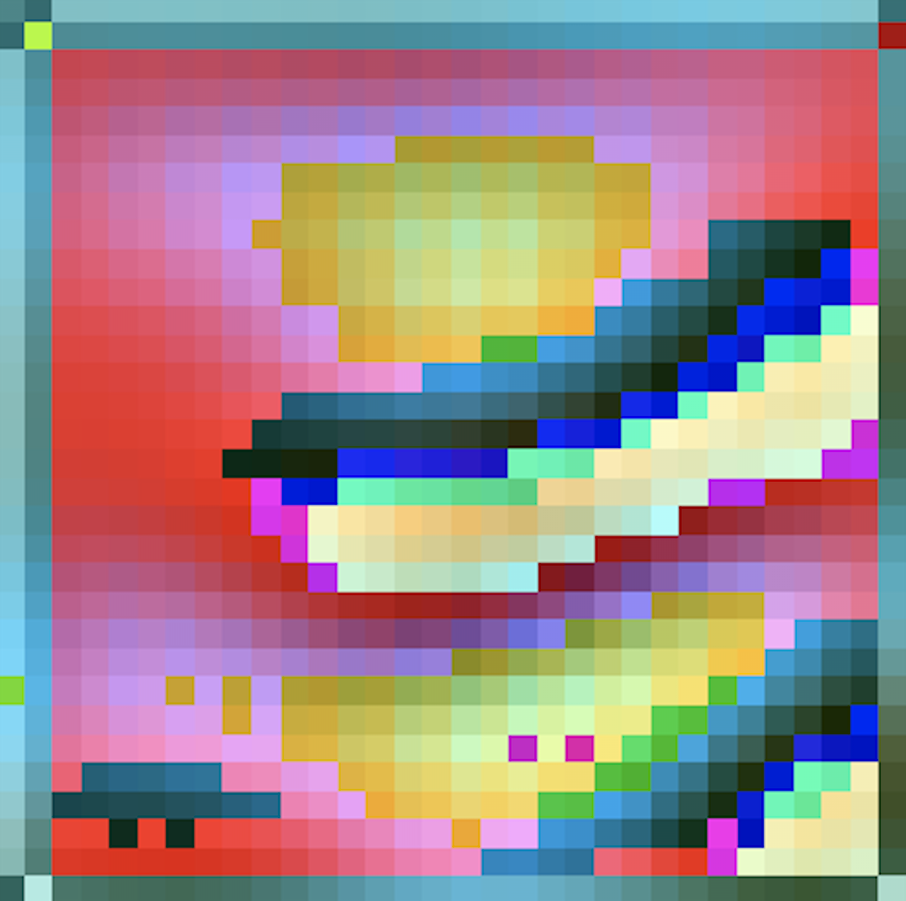
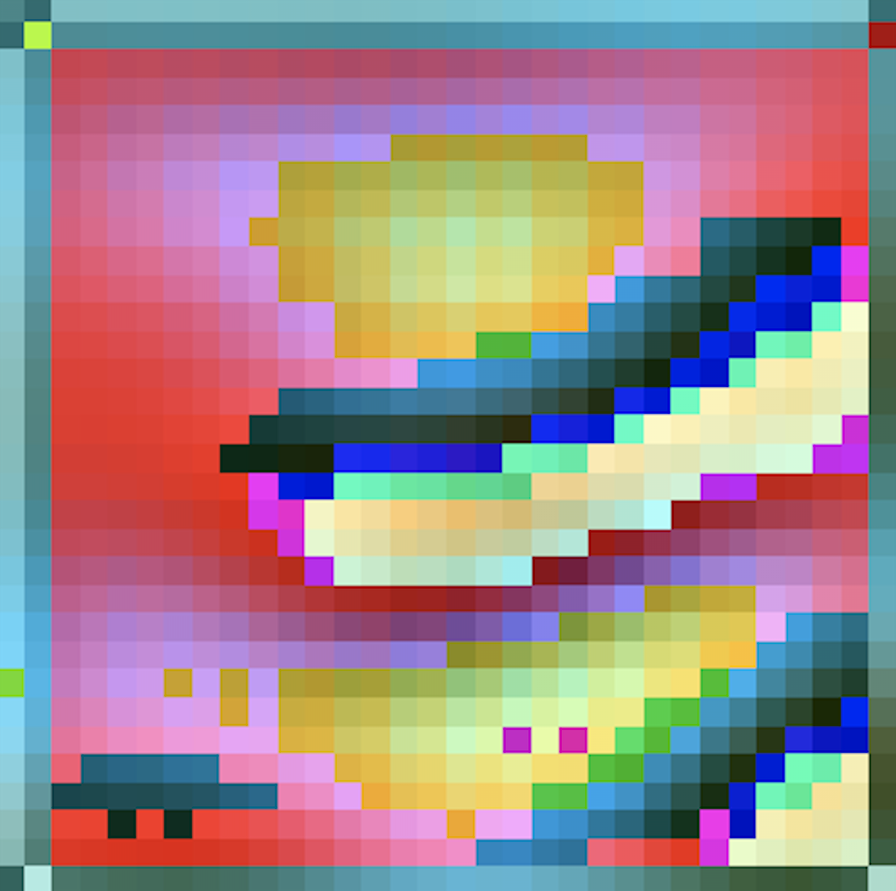

2D & 3D sculpting with Unity
As a resident ML-researcher/artist at Onformative, Berlin, I'm working on a 3D sculpting project in Unity3D. The idea is using reinforcement learning, enabled in Unity via its ml-agents library. The first stage is using a 2D environment to get the technique down. We're using an agent that gets a 2D input surrounding itself, which is a partial observation of the entire gridspace. It needs to make a target shape by adding, or deleting pixels that it needs to navigate to. The final idea is for people to witness real-time sculpting where it's about observing the agent intelligently going about its job, using and experimenting different tools. The different tools will allow different aesthetics to form, just like how different media for artsist result in different aesthetics. The second stage is going 3D. To the right is a little teaser o that.


Visualizing image recogntion models' representations
The biggest critique and scare of the usage of deep neural networks is that we don't know how exactly they compute. They're being called black box models for that reason. Various attempts have been made to get a better understanding of it, by presenting images, and visualizing the representations in different layers. One other way to do this is synthesizing input images by using gradient-ascent to maximise classification score on a selected class, filter, or neuron. This is called Activation Maximization. To play with that, I used CIFAR10 to train a CNN and applied activatin maximization on it. My results are visualizations of maximizing the classification of specific classes on Cifar10. I did get some good ones that looked like the various categories I was trying to visualize. However, after playing a bit more with it I got some unexpected results, displayed on the right. A lot of the work is playing with different regularization techniques on updates to the synthetic input image. Stronger natural image priors are necessary to produce better visualizations with this gradient ascent techinuqe. my playing around means adjusting the amount of the regularizations available. L2 regularization helped a lot, but I found that higher degrees of gaussian regularization (used in this paper to correlate pixels more with another) gave a really cool aesthetic to the output. It's all about finding the balance. My results were a bit overdone on the regularization-end. Yet, quite surprising how the results turned out so unenlightening visualization-wise, but so beautiful. I think there's more to explore in this area with other regularization techniques. It'd also be cool to visualize how the images change when updating, and changing to different classes.
 

Reinforcement Learning / Neural Architecture Search
For two semesters I did neuroscience/Machine-Learning research at MIT’s DiCarlo lab. They specialise in a computational model approach to study the brain’s visual system. I was Supervised by prof. J. DiCarlo, dr. P. Bashivan and dr. J. Kubilius, in two projects: One project was about using Neural Architecture Search for finding more brain-like models (Teacher Guided Architecture Search). The idea is using Neural Architecture search to construct convolutional neural network architectures closer to the brain’s 'architecture'. This can be done by comparing the representations of visual input at various depths in the brain and model using Representational dissimilarity matrices. Putting the simmilarity in the objective function steers the search into sampling more neural-like models. Here I learned and research a ton about reinforcement learning, by testing and implementing state of the art reinforcement learning optimisation algorithms (PPO, and REINFORCE) to make the search more efficient. The other project was using Neural Architecture Search for finding and analysing recurrent, and efficient cells for object recognition. This project was designed to steer the search into more parameter-sparse models by rewarding parameter sparsity in the optimizer's objective function. The model space we searched in were Cells of recurrent models (RNNs) for image recognition. Common implementations of these cells are LSTM and GRU cells.